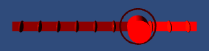
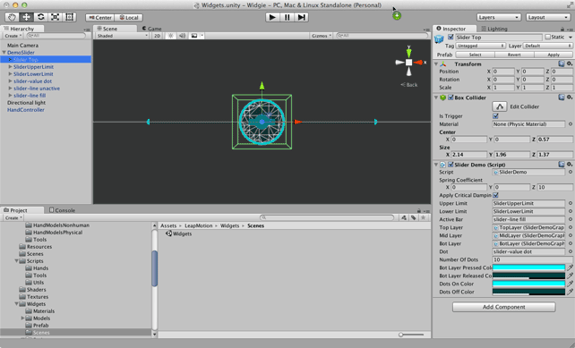
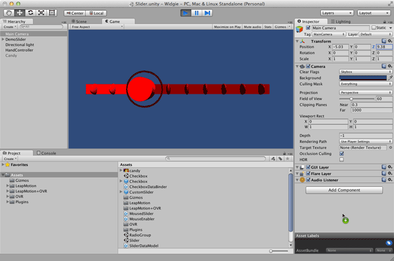
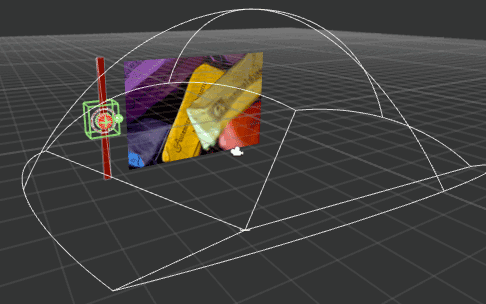
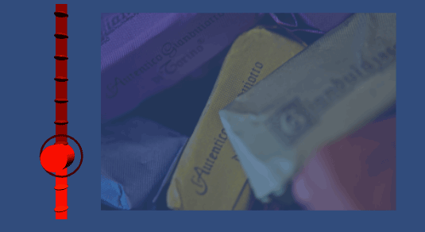

Customizing the Slider Widget¶
The following discussion walks through the steps required to customize the graphics of the DemoSlider widget:

After customizing the graphics, we will hook up the slider to the alpha property of a sprite using a data binder script.
Create a Scene for Constructing the Widget¶
First create a new project and scene for constructing the checkbox. You can save the end result as a prefab and use it in other projects. For convenience, we will start with the existing Widget scene because it already has a DemoToggleButton and camera setup. We will be revising this button object to create the checkbox-style button.
Create a new project
Import the latest Leap Motion Core Asset package.
Locate and open the Widgets scene under Assets/LeapMotion/Widgets/Scenes.
Rename the scene.
Delete the DemoToggleButton object. We won’t be using it.
At this point, your scene should look like this:
Customize the Graphic elements of the Button¶
To start, create a couple of materials to use for the slider:
- Assets > Create > Material
- Name it “SliderBright”
- Set its albedo color to fully saturated red (255, 0, 0).
- Copy this new material and name the copy, “SliderDark”.
- Set its albedo color to a darker red (128, 0, 0).
Next disable the graphic objects we aren’t going to use, these include:
- slider-cursor fill in the MidLayer of the Slider Top
- slider-line cap-left in the SliderUpperLimit
- slider-line cap-right in the SliderLowerLimit
Change the Slider button appearance:
- Under TopLayer, slider-cursor dot, add a Cylinder object.
b. Delete the existing default object. b. Change its transform so that it has 90 degree x-rotaion and a .3 y scale. c. Set the material for the cylinder to SliderBright. d. Under BotLayer, set the material used for the slider-cursor stroke/default object to SliderDark.
Change the tick mark dot appearance:
- Under slider-value dot, delete the existing objects and add a Sphere.
- Set the Sphere scale properties to: (0.2, 0.5, 0.5).
- Position the dot below the slider bar by setting the y position to -2.
- Set the material used by the sphere to SliderDark.
Change the static slider bar appearance:
Under slider-line unactive, delete any existing objects and add a Quad.
Set the Quad scale to (8.4, 0.45, 1).
The x scale value should be the same as the distance between the slider’s upper and lower limits (if you want the bar to fill the entire space between the limits).
- Set the Quad material to SlidrDark.
Change the appearance of the active slider bar.
Under slider-line fill, delete any existing objects and add another Quad.
Set the Quad scale to: (1, .45, 1).
This Quad is stretched in the x dimension.
Set the material to SliderBright.
Save the customized slider as a prefab:
- Rename the modified slider object in the Hierarchy view to “CustomSlider”.
- Drag CustomSlider to the project view to convert it into a prefab.
Try it out and make any desired adjustments. It should look something like:

Connect a Slider to the Property of a GameObject¶
Now we will make our slider actually do something using a data binding script. In this example we will use the slider to set the saturation value of a sprite:
To begin, rotate the slider to vertical by setting the CustomSlider z-rotation property to 90 degrees.
Drag an image into the Unity project view to create a texture asset. (You can use the image above.)
Drag the texture to the scene view.
Arrange the texture, CustomSlider, Camera, and HandController so that you can see both the slider and the image and can manipulate the full range of the slider with your hands
Add a new script component to the image sprite. Name it “SpriteToAlphaBinder”.
Implement a DataBinderSlider class that reads and writes the alpha value of the Unity SpriteRenderer’s color property:
using UnityEngine; using System.Collections; using LMWidgets; public class SliderToSaturationBinder : DataBinderSlider { private SpriteRenderer renderer = null; void Awake(){ renderer = gameObject.GetComponent<SpriteRenderer> (); base.Awake (); } override protected void setDataModel(float value) { Color currentColor = renderer.color; currentColor.a = value; renderer.color = currentColor; } override public float GetCurrentData() { return renderer.color.a; } }The Awake() method finds the SpriteRenderer component and, crucially, calls the base class Awake() method. Note that the order is important here, the data model must be accessible before the base class Awake() method is called. Otherwise, the slider will not be initialized to the current value of the data model.
The setDataModel() method sets the alpha value of the color based on the current alpha value of the SpriteRenderer color property.
The GetCurrentData() method reports the current value of the color property alpha to the Slider code and is called once per Unity frame. Notice that if you manually set the alpha value (while the scene is playing), the slider button position also changes.
The value of the slider is always in the range [0..1], but you can shift and scale the value as needed.
Drag the Slider Top (the object containing the DemoSlider script component) to the Widgets property of the data binder script on the image sprite.
Now run the scene and play with the slider. The image should fade in and out as you change the value.
